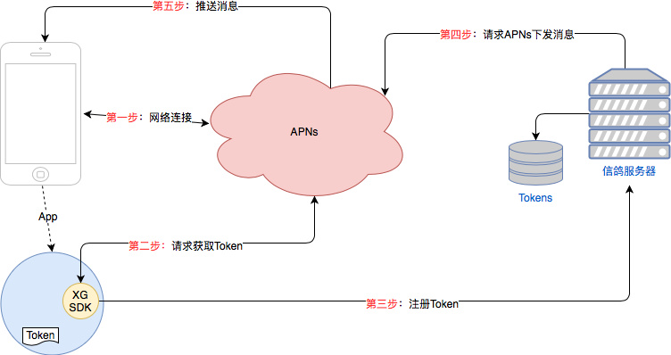

1. 推送服务介绍
对于iOS端实现推送消息的服务涉及到三个角色：终端应用(Client App)，APNs(Apple Push Notification service)，信鸽服务器(XG Provider)。在使用信鸽推送服务实现给客户端推送消息，需要这三个角色在整个流程中相互配合，任何一个角色出现异常都可能会导致消息推送收不到。
针对iOS设备的消息推送，信鸽平台目前只借助APNs通道，暂不支持应用内自有通道的消息下发。
1.1. 推送流程原理介绍

简要说明iOS客户端实现推送流程的步骤：
- 第一步：要求客户端设备与APNs建立TSL连接，APNs需要验证设备的有效性；
- 第二步：客户端App在合适的时机，借助系统提供的接口向APNs请求推送消息用的Token；(SDK 内部实现)
- 第三步：客户端App在合适的时机，将从APNs获取的Token注册到信鸽服务器；（SDK内部实现）
- 第四步：通过管理台(xg.qq.com)或者是REST API创建推送消息，然后信鸽服务器再去请求APNs下发消息；
- 第五步：APNs服务器接收到信鸽服务器的推送消息请求后，根据Token来将推送的消息下发到指定的设备；
以上流程可以看出，终端设备的联网状态是至关重要的。
1.2. SDK 说明
1.2.1. 文件组成
XGPush.h，SDK提供接口的头文件；
libXG-SDK.a，静态库文件；
1.2.2. 版本说明
- 支持iOS 6.0+;
- 针对iOS 10.0+以上版本，
- 需要额外引入UserNotification.framework；
- 建议使用Xcode 8.0 +;
- 如果使用Xcode7及其以下的版本，需要自行配置iOS SDK来支持UserNotification框架的编译；
1.2.3. 主要功能说明
iOS SDK是信鸽推送服务为客户端实现消息推送而提供给开发者的接口，主要负责完成：
- 设备Token的自动化获取和注册，降低接入门槛；
- 账号、标签与设备的绑定接口，以便开发者实现特定群组的消息推送，丰富推送方式；
- 点击量上报，统计消息被用户点击的次数；
1.3. 通道介绍
关于信鸽使用的消息下发通道APNs介绍，需要了解更多，可以参照：APNs